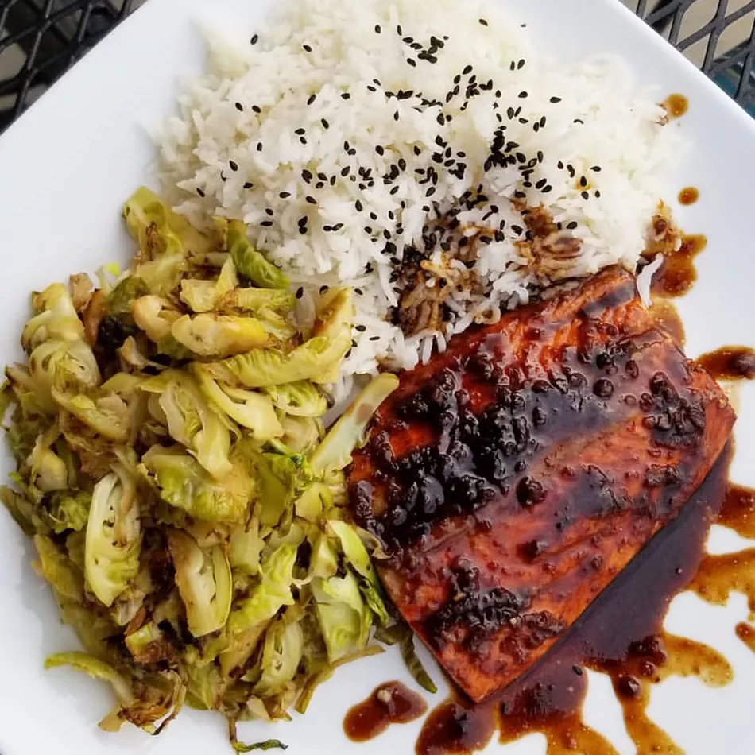

Balsamic-Glazed Salmon Fillets

This balsamic salmon recipe features a balsamic
vinegar glaze made with garlic, honey, white wine,
and Dijon mustard that makes baked salmon
fillets taste extraordinary.
Ingredients
- aluminum foil
- aluminum foil
- 4 cloves garlic, minced
- ⅓ cup balsamic vinegar
- 4 teaspoons Dijon mustard
- 1 tablespoon honey
- 1 tablespoon white wine
- salt and pepper to taste
- 6 (5 ounce) salmon fillets
- 1 tablespoon chopped fresh oregano
Steps
- Preheat the oven to 400 degrees F
(200 degrees C). Line a baking sheet
with aluminum foil, then spray with
nonstick cooking spray.
- Coat a small saucepan with nonstick
cooking spray; place over medium heat.
Cook and stir garlic in the hot pan
until soft, about 3 minutes. Stir in
balsamic vinegar, mustard, honey,
white wine, salt, and pepper. Simmer,
uncovered, until slightly thickened,
about 3 minutes.
- Arrange salmon fillets on the prepared
baking sheet. Brush fillets with
balsamic glaze; sprinkle with oregano.
- Bake in the preheated oven until flesh
flakes easily with a fork, 10 to 14
minutes. Brush fillets with remaining
glaze; season with salt and pepper.
Use a spatula to transfer fillets to
a serving platter, leaving the skin
behind on the foil.